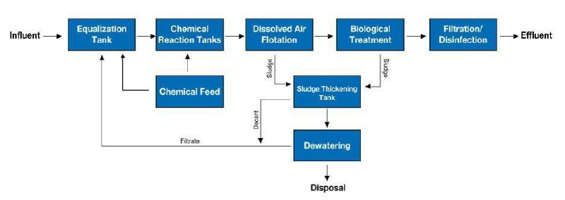
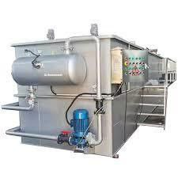
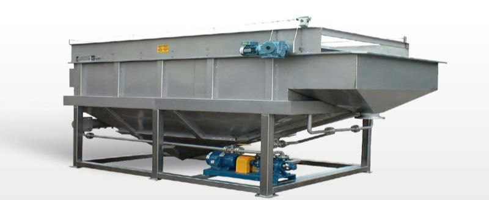
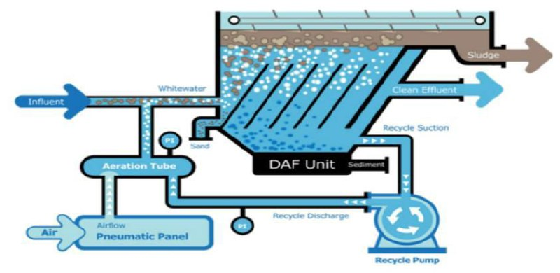
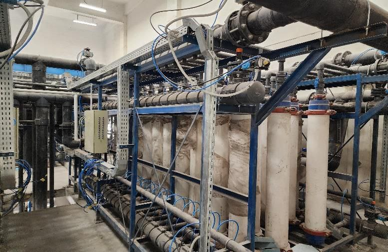

Industrial wastewater treatment is the process of treating water discharged from manufacturing
and industrial operations to remove harmful pollutants before release or reuse. Each industry
produces a unique type of wastewater, requiring specialized treatment technologies.
> HDCOP View
At HDCOP for Engineering, we offer custom-designed solutions for a wide range of
industrial sectors, ensuring compliance with environmental regulations and enabling water
recovery, reuse, or safe discharge.
• Typical Wastewater Treatment Process Includes:
1. Pre-Treatment
- Screening: Removes large solids like plastics, rags, and debris.
- Equalization Tanks: Balance flow and load variations.
- Oil & Grease Removal: Separators or remove free oils and fats.
2. Primary Treatment
- Chemical Coagulation & Flocculation: Addition of chemicals to aggregate suspended solids.
- pH Adjustment: Neutralization of acidic or alkaline effluents.
- Reducing TSS : Separators or Dissolved Air Flotation (DAF) units .
3. Secondary (Biological) Treatment
- Activated Sludge or MBBR/MBR Systems: Biologically remove biodegradable organics.
- Anaerobic Treatment (if high-organic load): Reduces sludge production
- Settling/Sedimentation: Solid-liquid separation of flocs.
4.Tertiary Treatment (Advanced)
- Filtration & Adsorption (e.g., activated carbon): Remove remaining pollutants.
- Heavy Metal Removal or Advanced Oxidation (AOP): For hazardous compounds.
- Disinfection: Ensures water is free from pathogens for reuse or discharge.
5. Sludge Treatment & Disposal
- Dewatering and safe handling of toxic or hazardous sludge.
- 
>Industries We Serve:
- Food & Beverage Processing
- Petrochemicals & Oil Refineries
- Textile & Dyeing
- Pulp & Paper
- Pharmaceutical & Chemical Plants
- Power Generation & Heavy Industry
•Scope of Supply for Industrial Wastewater Treatment
At HDCOP, we provide a complete range of products, services, and solutions to design, build, and operate wastewater treatment plants.
a. Design and Engineering
b. Equipment and Technologies
- Primary Treatment: Bar screens, grit chambers, and primary clarifiers, DAF System,OGS.
- Secondary Treatment: Activated sludge systems, MBBR, SBR, and MBR.
- Tertiary Treatment: Sand filters, membrane, and disinfection systems (UV, ozone, chlorination).
- Sludge Treatment: Thickeners, digesters, centrifuges, and belt presses.
- Pumps, Blowers, and Mixers: for aeration, mixing, and fluid transfer.
Dissolved Air flotation (DAF)



